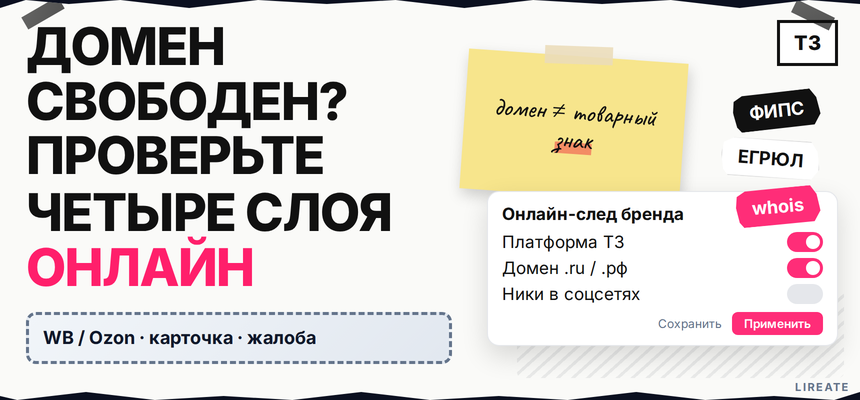
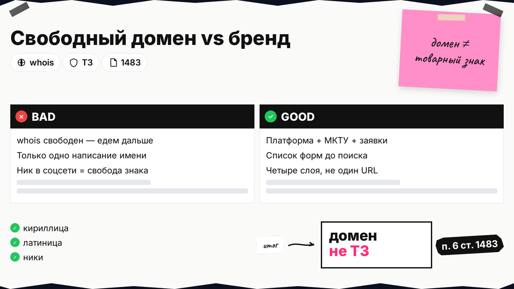
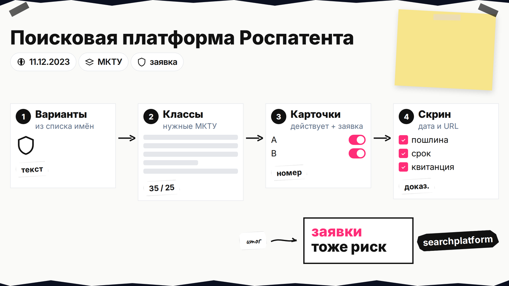
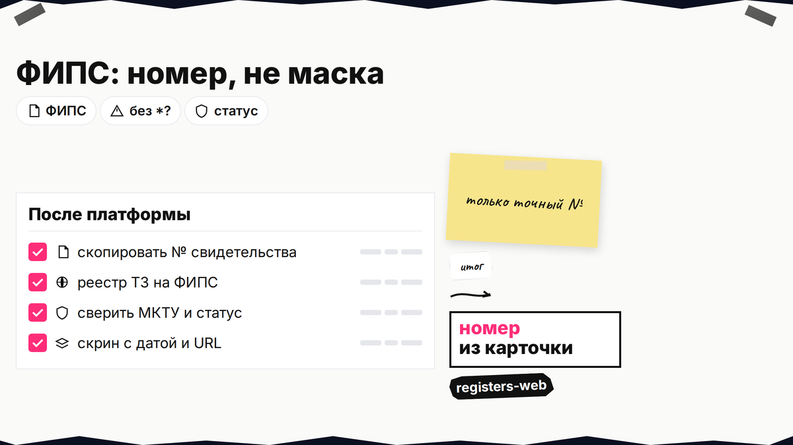

Вы придумали название, заказали логотип и уже смотрите домен .ru - а потом всплывает чужой товарный знак в том же классе или занятый ник в соцсети. Проверить бренд на уникальность онлайн можно за один вечер, если пройти четыре независимых слоя: реестр Роспатента, ЕГРЮЛ, whois и ручной обход площадок. Ниже - пошаговый чек-лист с официальными ссылками, таблицей рисков и правилом, когда менять имя до сайта и заявки.

TL;DR / Быстрый инсайт: Свободный домен не равен свободному бренду: право на имя проверяют в Поисковой платформе Роспатента, а карточки - в открытых реестрах ФИПС по номеру. ЕГРЮЛ показывает тёзок-юрлиц, но не заменяет поиск товарного знака. Whois - публичная справка о занятости домена; регистрация адреса в сети не создаёт исключительного права на обозначение. Ник в VK, Telegram, YouTube и на маркетплейсе - отдельный слой "цифрового следа". Красный сигнал по ТЗ в вашем классе МКТУ - повод доработать имя или пройти полный чек-лист перед подачей, а не вкладываться в рекламу. Подробная навигация по сайтам ФИПС - в материале про бесплатную проверку в реестрах.
Гайд для предпринимателя. Нормы сверены на 07.11.2026; это не индивидуальная юридическая консультация. МКТУ - классы товаров и услуг в заявке на знак. Whois - открытые данные о том, занят ли домен и кто его держит.

Одно слово в реестре может выглядеть иначе, чем в вывеске или на коробке. Запишите все формы, которые реально планируете использовать в бизнесе.
Делайте: хранить список в таблице или заметке с датой проверки. Не делайте: искать только одно "идеальное" написание и игнорировать альтернативы - экспертиза сравнивает сходство, а не только побуквенное совпадение (п. 6 ст. 1483 ГК РФ).

С 11.12.2023 текстовый поиск по базе товарных знаков РФ идёт на searchplatform.rospatent.gov.ru/trademarks - круглосуточно и без оплаты (см. online.rospatent.gov.ru). Для словесного знака платформа умеет искать по тексту, звучанию и смыслу; выбирайте классы МКТУ, в которых планируете продавать товары или оказывать услуги.
Делайте: считать релевантными и заявки конкурентов, ещё без свидетельства. Не делайте: путать этот шаг с "одной кнопкой" на коммерческих агрегаторах - они удобны для первого прохода, но итоговую оценку вы сверяете с официальными реестрами.

На fips.ru/registers-web поиск идёт по номеру свидетельства или заявки. Символы подстановки *, ?, >, <, - в запросе не работают - только точный номер из карточки платформы.
Скопируйте номер с платформы, откройте реестр ТЗ или заявок на ФИПС, сверьте статус и МКТУ. Пошаговый интерфейс - в гайде по Роспатенту и ФИПС.
Делайте: сохранять скрин с датой и URL. Не делайте: закрывать тему, если в платформе "пусто", но вы не проверили заявки и смежные классы.
На egrul.nalog.ru ФНС даёт выписку о юридическом лице по ИНН, ОГРН или наименованию. Совпадение фирменного названия с вашим брендом не блокирует регистрацию товарного знака автоматически, но создаёт путаницу у клиентов и банков.
Делайте: воспринимать ЕГРЮЛ как слой "кто уже так называется в реестре компаний". Не делайте: считать, что раз в Роспатенте чисто, проверять ЮЛ не нужно - реестры не синхронизированы.
Регистраторы публикуют данные о домене в whois. На whois Рег.ру или у другого регистратора проверьте занятость адреса, дату окончания регистрации и владельца (справка Рег.ру). Свободный .ru значит, что имя в этой зоне можно оформить у регистратора, но не доказывает свободу слова как товарного знака.
Домен в бухучёте - в рубрике «Сайт» на Лирейт (материал про НМА). Делайте: регистрировать адрес после зелёного или жёлтого слоя по Роспатенту. Не делайте: вкладываться в сайт при красном сигнале по ТЗ в вашем классе.
Роспатент не ведёт реестр ников в VK или Telegram. Здесь только ручной обход: войти под своим аккаунтом, попробовать создать канал, группу или страницу с нужным именем, посмотреть чужие профили с тем же написанием.
Делайте: фиксировать ссылку и скрин. Не делайте: путать "ник свободен" с юридической свободой знака.
| Слой проверки | Официальный или рабочий URL | Что ловит | Чего не ловит |
|---|---|---|---|
| Поисковая платформа | searchplatform.rospatent.gov.ru/trademarks | ТЗ и заявки по слову, МКТУ | Домен, ник в соцсети |
| Реестры ФИПС | fips.ru/registers-web | Статус по номеру документа | Поиск по маске без номера |
| ЕГРЮЛ | egrul.nalog.ru | Юрлица с похожим наименованием | Товарные знаки |
| Whois | reg.ru/whois и аналоги | Занятость домена в зоне | Исключительное право на имя |
| Соцсети и МП | ручной обход | Занятый ник, чужой след в поиске | Запрет по ст. 1483 ГК РФ |
Схема одного вечера:
Варианты названия → Поисковая платформа + номера в ФИПС → ЕГРЮЛ → whois (.ru, .рф, запасная зона) → соцсети и площадки → таблица зелёный / жёлтый / красный → папка со скринами и датами
Бесплатного поиска на платформе часто хватает для первого решения; платная предоценка на ФИПС (от 46 200 руб. за класс по тарифам на fips.ru) - при жёлтой зоне. Для экспорта - WIPO Brand Database и TMview.
Делайте: принять решение "оставить / доработать / сменить" до оплаты сайта и пошлины за заявку. Не делайте: полагаться только на отчёт коммерческого агрегата без сверки с гос. URL.
После зелёной или согласованной жёлтой сводки подготовьте заявку, классы МКТУ и макет знака. Если нужна платная проверка перед подачей, откройте проверку товарного знака на Лирейт; сопровождение подачи — на странице регистрации товарного знака - без обещания исхода Роспатента. Остальные материалы по теме - в рубрике "Товарный знак".
Материал проверен: редакция Лирейт, официальные страницы Роспатента, ФИПС, ФНС и справка регистратора доменов.
Достоверность данных: редакционная проверка на 07.11.2026. Показы Яндекс Вордстат в материал не включались: в среде подготовки инструмент был недоступен.
Нет. Whois показывает только занятость адреса в зоне. Товарный знак в реестре Роспатента и заявка конкурента - отдельная история. Сначала платформа и ФИПС, потом покупка домена.
Да, если вы будете выводить то же слово в фирменном наименовании ООО или на документах. Клиенты и партнёры часто гуглят название компании, а не только знак из реестра ТЗ.
Для первичного отсечения "явный конфликт / похоже, чисто" - да. Для спорного сходства, комбинированного знака и нескольких классов - подключайте чек-лист проверки перед подачей и при необходимости поверенного; платформа не выдаёт юридический вердикт вместо экспертизы.
Занятость ника, чужие сообщества с тем же именем, первая страница поиска по точной фразе. Это защита маркетинга и будущего единого стиля, пока свидетельства ещё нет.
При жёлтой или красной сводке, при комбинированном знаке, при планах на несколько классов МКТУ или экспорт в TMview. Самостоятельный онлайн-след не заменяет профессиональный поиск сходства до смешения.
Такие агрегаторы собирают ТЗ, ЕГРЮЛ, домены и ники за минуту - удобно для черновика. Итог для решения о подаче сверяйте с Поисковой платформой и номерами на ФИПС, а не с одной кнопкой "всё свободно".